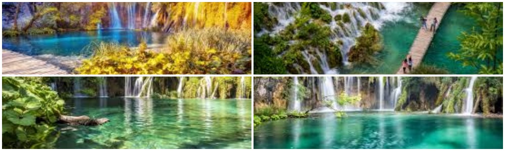

Plitvice Lakes National Park (Croatian: Nacionalni park Plitvička jezera, colloquially Plitvice, pronounced [plîtʋitse]) is one of the oldest and largest national parks in Croatia. In 1979, Plitvice Lakes National Park was added to the UNESCO World Heritage register. The national park was founded in 1949 and is in the mountainous karst area of central Croatia, at the border to Bosnia and Herzegovina. The important north–south road that passes through the national park area connects the Croatian inland with the Adriatic coastal region. The protected area extends over 296.85 square kilometres (73,350 acres). About 90% of this area is part of Lika-Senj County, while the remaining 10% is part of Karlovac County. Each year, more than 1 million visitors are recorded. Entrance is subject to variable charges, up to 250 kuna or around €34 per adult per day in summer 2018.
